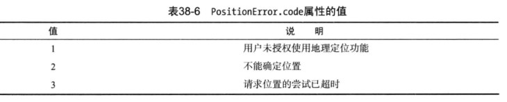
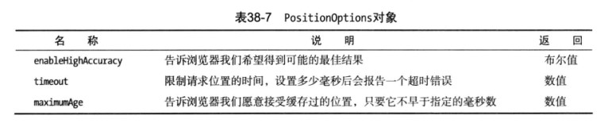

HTML5-地理定位
Category:
HTML5
发表:
更新:
大纲
地理定位API不是HTML5规范的一部分，但经常被归组到HTML5相关的新功能中。
地理定位
- 使用地理定位
我们通过全局属性navigator.geolocation访问地理定位功能，它返回一个Geolocation对象，下面是这个对象的方法：getCurrentPosition(callback,errorCallback,options) 获取当前位置 void watchPosition(callback,errorCallback,options) 开始监控当前位置 数值 clearWatch(id) 停止监控当前位置 void - 获取当前位置的getCurrentPosition方法
getCurrentPosition方法获取当前位置，方法接受三个参数，第一个是成功之后的回调函数，该函数获得一个表示当前位置的Position对象；第二个参数是定位错误的回调函数，此函数会获得一个PositionError对象；第三个参数是表示地理定位选项的对象。 - Position对象
Position对象只有两个属性：coords属性返回一个Coordinates对象，包含当前位置的坐标；timestamp属性返回获取坐标信息的时间戳，下面是Coordinates对象的相关属性：名称 说明 返回 latitude 返回由十进制表示的纬度 数值 longitude 返回由十进制表示的经度 数值 altitude 返回用米表示的海拔高度 数值 accuracy 返回用米表示的坐标精度 数值 altitudeAccuracy 返回用米表示的海拔精度 数值 heading 返回用度表示的前进方向 数值 speed 返回用米/秒表示的行进速度 数值 - PositionError对象
PositionError对象只有两个属性：code属性返回代表错误类型的代码；message返回描述错误的字符串。
 - 指定地理定位选项
 地理定位综合例子：
12345678910111213141516171819202122232425262728293031323334353637383940414243<html><head><meta charset="UTF-8"><title></title><style type="text/css">table{border-collapse: collapse;}table td{padding: 4px;}</style></head><body><table border="1"><tr><td>Longitude</td><td id="longitude">-</td><td>Latitude</td><td id="latitude">-</td></tr><tr><td>Altitude</td><td id="altitude">-</td><td>Accuracy</td><td id="accuracy">-</td></tr><tr><td>Altitude Accuracy</td><td id="altitudeAccuracy">-</td><td>Heading</td><td id="heading">-</td></tr><tr><td>Speed</td><td id="speed">-</td><td>Time Stamp</td><td id="timestamp">-</td></tr><tr><td>Error Code</td><td id="errorcode">-</td><td>Error Message</td><td id="errormessage">-</td></tr></table><script type="text/javascript">var options = {enableHighAccuracy:false,timeout:2000,maximumAge:30000}navigator.geolocation.getCurrentPosition(displayPosition,handleError,options);function displayPosition(pos){var properties = ["longitude","latitude","altitude","accuracy","altitudeAccuracy","heading","speed"];for(var i = 0 ; i < properties.length ; i++){var value = pos.coords[properties[i]];document.getElementById(properties[i]).innerHTML = value;}document.getElementById("timestamp").innerHTML = pos.timestamp;}function handleError(e){document.getElementById("errorcode").innerHTML = e.code;}</script></body></html>监控位置
可以用watchPosition方法不断获得关于位置的更新。这个方法所需的参数和getCurrentPosition方法相同，工作方式也一样。它们的区别在于：随着位置发生改变，回调函数会被反复地调用。
如果想要停止监控，可以把navigator.geolocation.watchPosition方法返回的ID值传给clearWatch方法。